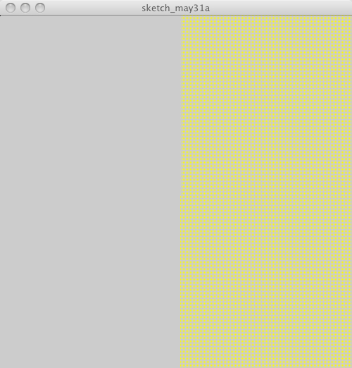

P5 doesn't give the same result, is it broken?

import processing.opengl.*;
void setup(){
size(500, 500, P3D);
beginShape(POINTS);
for(int x = 0; x < 255; x++){
for(int y = 0; y < 255; y++){
stroke(x,y,255-x);
vertex( x * 2, y * 2, 0);
}
}
endShape(CLOSE);
}